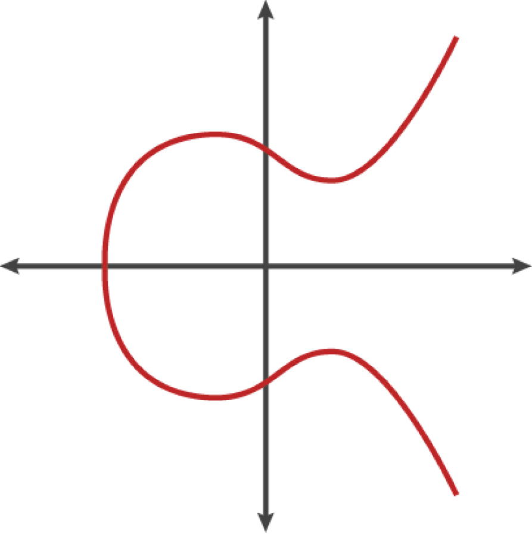

這會是一個艱苦的文章…我總覺得我好像挖了一個大坑給自己還硬要跳下去…😖
在開始之前，我想先請你試試看回答下面幾個問題，看看你對比特幣了解多少
- 可以相信這筆錢是真實的，而不是偽造的嗎？
- 可以確定數位貨幣只能使用一次嗎？（俗稱＂雙重支付＂，＂雙花＂問題）
- 可以確保除了我以外，沒有人可以聲稱我的一筆錢屬於他們嗎？
這三個問題來自Mastering Bitcoin一書，是數位貨幣最基本的三個問題，我們一一解答這三題，並且我會試著用最平白的語言講解其中的技術原理。
用一句話來說明比特幣會是：比特幣是一串程式碼，用密碼學原理保護著，它同時運行在網路上好幾個伺服器，每十分鐘會多一個區塊("區塊"也是一段新的程式碼)。
接著，你手上會有三種東西，私鑰/公鑰，和地址。
私鑰
私鑰是一串0和1構成的數字，總共256位，所有可能即是2^256 (2的256次方)，形象化的形容是，地球上每一粒沙子都當作一個地球，這些沙子地球裡的每一粒沙子都總數大約就等於2^256 次方。另一種說法是，整個宇宙裡面能觀測到的原子數量，再乘以1000就相當於2^256 。關於這個數字到底有多大可以參考最下面的補充資料。
公鑰
公鑰是私鑰經過一串數學計算後得到的。簡單講是這樣但…來吧！
 這是secp256k1標準的橢圓曲線加密(ECC)，我們的目標是找到一個符合的解(x,y)。比特幣的私鑰k，乘以常數G(由secp256k1內建的標準數)，會得到一個公鑰K(x,y)。這個數有多大呢?大概是這樣： x = F028892BAD7ED57D2FB57BF33081D5CFCF6F9ED3D3D7F159C2E2FFF579DC341A y = 07CF33DA18BD734C600B96A72BBC4749D5141C90EC8AC328AE52DDFE2E505BDB (以16進位表示)
地址
最後是地址，通常長這樣"1J7mdg5rbQyUHENYdx39WVWK7fsLpEoXZy"，這是由公鑰K經過計算而來，計算方式如下： A=RIPEMD160(SHA256(K)) 也就是地址經過SHA256算出來的結果，再用RIPEMD160算一次。 接著為了防止填錯，大部分的地址都會用Base58Check形式顯示。Base58Check中沒有零0、大寫O、小寫L、大寫i，還添加了驗證碼CheckSum。
可以相信這筆錢是真實的，而不是偽造的嗎？
第一個問題，其實可以從幾個角度去看。先來看怎麼確定真實性好了 所有的比特幣最初的來源都是挖礦，「挖礦」行為是好幾個伺服器競爭猜一道數學難題，猜對的伺服器能從系統本身獲得比特幣。之後比特幣可能轉手多個人之後流到我手上。在每一次轉手過程中，都會將交易資訊經由橢圓曲線加密的ECDSA數位簽章作證明，證明一筆錢(確切的說是一段程式碼)轉移給了另外一個人。這個簽章證明了私鑰擁有人授權將錢轉出到另一個地址，包括轉出給誰、多少數量都記錄在內。其他人可以藉由公鑰來驗算這是不是真的。這些資訊都將廣播到網際網路上，等待礦工算完難題將這些資訊打包成新的區塊。一個個區塊串成了區塊鏈，我們可以藉由這個方式確定每一筆交易都是真的，如果一個人將比特幣(再次強調，他是一串程式碼)傳給你，而他也包含了該有的數位簽章，又被礦工打包確認，那這個比特幣無疑是真的。
寫道這真的頭痛，後續補充：技術篇(二)